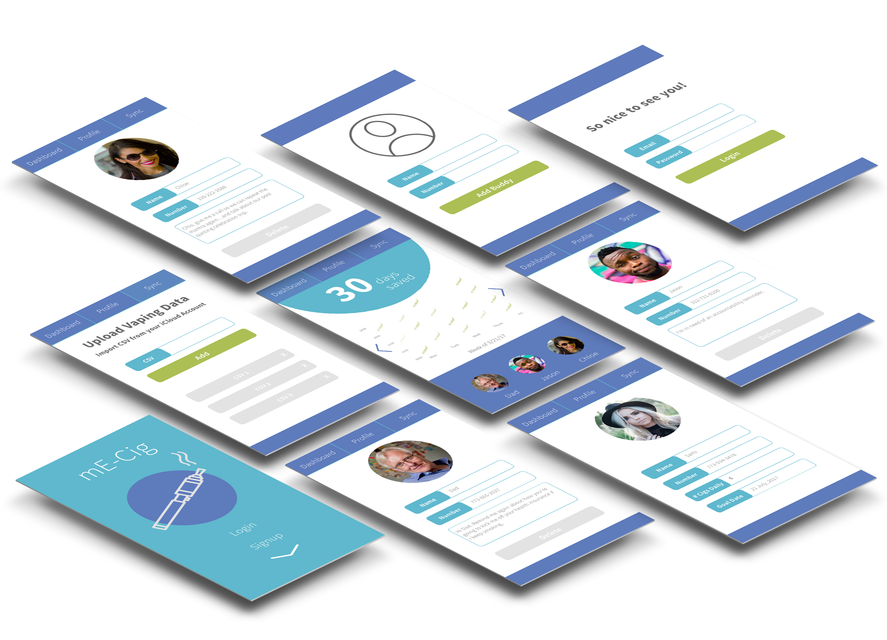
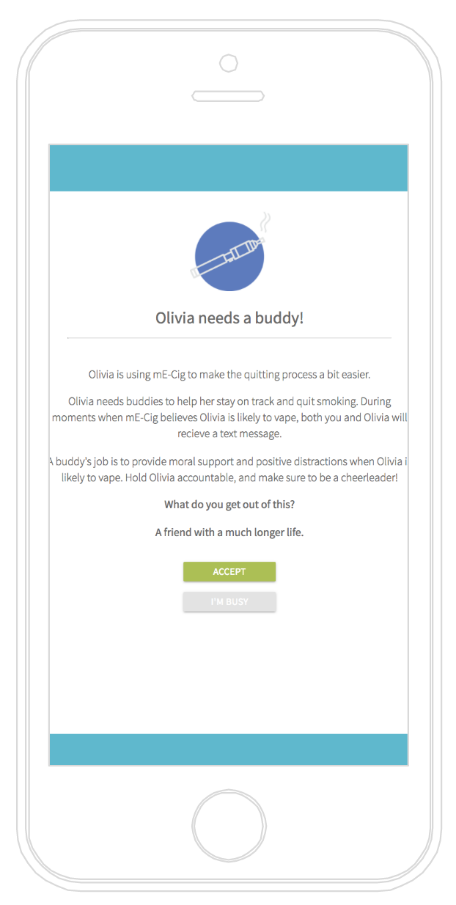

How might we motivate smokers to quit through the use of data and the group mentality?
mE-Cig will help smokers using e-cigs to reduce their smoking by giving them a better understanding their vaping patterns and providing them with the support they need to quit.
mE-Cig features a phone and web-based application with an easy-to-comprehend data visualization that nudges users towards quitting. The technology service will involve the user’s friends and family to support them on the path to quitting.
After developing and user testing the original look and feel, I realized the color palette did not appeal to my target audience. I decided to keep the color pallette in calming hues, but to use bolder and brighter to attract millenials. The app needed to feel cool and fun to use, not too much like a medical application.
In order to test the functionality, I built a web version of the application. The application was able to send text messages using twilio, and emails using nodemailer. While the app would send text messages just before the data vis on the dashboard indicated it was likely the user would smoke, I created a twillio scheduler to be set manually.
Two emails were created, one to invite buddies and one to send weekly updates regarding the status of the user trying to quit, and recommending lower doses of e-liquid depending on progress.